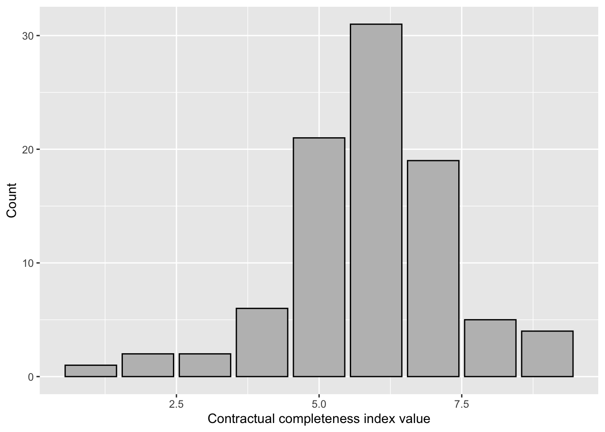

Contracts are a key market institution. They facilitate trade by providing trading partners with essential information about their respective rights and responsibilities. Just as important is their mitigation of opportunism by economic actors. Trading parties who feel they have been cheated can leverage the existence of a contract in courts to force the cheater to compensate them for any economic damages. Unsurprisingly, economists have produced a large literature on contracts—their structure and content, their impact on economic activities, and more. One important insight from this literature is that, although formal contracts—written documents that use formulaic language to specify each party’s claims and obligations and are enforceable by a third party, usually the government—benefit all those involved, they are also costly to draft and enforce. Thus, we seldom, if ever, observe “complete” contracts in real-world markets.
This paper builds on the contributions from the literature on the economics of contracts to study the fundamental institution that governed the market for paintings in Renaissance Italy: The commission contract. On the demand side of this market were the patrons—those individuals or corporate entities willing to disburse significant sums of money to decorate public spaces and signal their magnificence to the rest of society (Nelson and Zeckhauser 2014). On the supply side were master painters and their workshops of skilled artisans. When the two sides came together—i.e., when the patron awarded a commission to a master painter—they often wrote a document, aided by a legal professional or a notary. This document was a legally binding contract listing both parties’ obligations to each other. Several features of Renaissance commission contracts are of interests to economists. First, their content strongly indicates that both patrons and painters worried about the possibility each other’s opportunism. Second, their content and structure varied significantly from commission contract to commission contract. Some were quite long, referenced several categories of obligations explicitly, and contained detailed descriptions of the final product. Some were quite short, referenced only a few duties of either party, and made no effort at all to describe the subject of the painting.
A cursory understanding of the workings of Renaissance art markets explains why patrons were concerned with opportunism. Paintings from this period were often produced with expensive materials like gold and lapis lazuli, which painters may replace with much cheaper options and pocket the difference. Painters whose work was popular with many potential patrons would also often be tempted to take one too much work at once, leaving them with the choice between subcontracting much of it to their (less talented) assistants or failing to execute commissions by the agreed upon date. Neither option would have been particularly popular with patrons. Nor where patrons immune from the lure of opportunism. A painter may rightfully fear that the patron may renege on their promise to pay, perhaps by claiming to be unsatisfied with the final painting.
To identify and measure the effect of the threat of opportunism on contracting practices in Renaissance art markets, we build a novel data set using commission contracts from this period. We tracked down documents corresponding to commissions for paintings from Renaissance Italy from a wide array of secondary sources, most importantly the list of commission contracts in O’Malley (2005) and those in the Italian Renaissance Document Site from the University of Kent. We then analyzed each document to extract information on the terms and conditions agreed upon by the trading partners. In total, out data set consists of ninety-one documents, each corresponding to a unique painting commission. For each document, we created ten binary variables corresponding to ten categories of terms and conditions found in Renaissance art contracts and used this information to generate an index variable to measure contractual completeness.
We combine these data with commission-, patron-, and painter-specific information, including whether the commission was awarded by a secular or religious institution, the age, years active as painter, and number of paintings completed by the latter at the signing of the contract. We use the resulting data set to test a variety of hypotheses on how the threat of opportunism shaped the content and structure of Renaissance art contracts. Our results show a large, robust, and statistically significant effect of the value of a commission—the total compensation promised by the patron to the painter—and the degree of contractual completeness of the commission document—whether we measure it by the length of the same document or by our index of contractual completeness. We find also suggestive evidence that a painter’s contemporaneous reputation—measured alternatively in terms of his age, the length of his career up to that point, and the number of commissions completed until the year before—is negatively correlated with contractual completeness.
Our analysis relate to three strands of economic literature. First, we contribute to the study of the economics of contracts. More specifically, our argument builds on the literature on the role of transaction costs on institutional choice Barzel (1997). This literature emphasizes the threat of opportunism as a determinant of trading parties’ decision of how to structure their interactions (Klein, Crawford, and Alchian 1978). Another essential intuition associated with this body of work is that the governance of exchange is costly: Contracts can never be complete—in the sense that they cannot make provisions for all possible future circumstances—and their enforcement is not free. Real-world markets function thanks to a mix of formal and informal contracts, always short of complete and enforced by a combination of public institutions—like government-run court—, private institutions—such as arbitrators—, and market forces—like vertical integration and reputation (MacLeod 2007). We contribute to this literature by providing systematic evidence that concerns for opportunistic behavior affect the content and structure of the contract governing the same transaction. This is consistent with the argument in Al-Najjar (1995) that the characteristics of trading partners, legal environment, and the commodity exchanged will determine the equilibrium degree of contractual completeness of a given transaction. Moreover, our results support claims about the substitutability of reputation and formal contractual enforcement Barzel (1997)
The second literature our argument relates to is the economics of contracts in a variety of historical settings. Umbeck (1977) is an early contribution to this literature. Building on the model of contract choice developed by Cheung (1968), Umbeck argues that gold miners during the California gold rush of the 1840s arranged their interactions in ways predicted by the theory. For instance, he finds that gold miners abandoned the sharing model was the costs of enforcement increased significantly due to the rapid growth in the mining population. In a similar vein, Lueck (1994) shows that the institutions governing access to common pool resources by pre-modern societies followed a similar logic.1 A distinct body of work, although also related to the economic theory of contracting, is that which emphasizes the role of private institutions and market forces in the enforcement of trade. For instance, Milgrom, North, and Weingast* (1990) argue that the commercial revolution of the Late Middle Ages had been made possible by private courts that relied on a body of judicial rules known as “law merchant” and whose decisions were enforced by ostracism from merchant-run trade fairs. Another influential contribution is Greif (1989), which shows that medieval Jewish merchants were able to succeed in the business long distance trade in the absence of formal enforcement. Instead, these traders relied on informal reputational mechanisms that required the communication of information about each trader’s past performance between members of their “coalition.” The threat of seeing future business opportunities damaged by a loss of reputation was enough to guarantee performance in most circumstances.2 We contribute to this body of work by extending the same theoretical framework to Renaissance art markets in the Italian peninsula. This extension is of particular interest due to the nature of the commodity and the institutional context of the transaction. Renaissance paintings were complex commodities, their value in large part a function of characteristics—like the quality of their design and their composition—that are hard to contract upon ex-ante. These characteristics would make third-party enforcement challenging even in the presence of a well-functioning legal system like those found in advanced market economies. Yet, a market for Renaissance art arose and thrived in Renaissance Italy, before the development of modern public institutions to support private transactions.3
Finally, we contribute to the economics of Renaissance art markets. Etro and Pagani (2013) and Etro (2018) are recent contributions to this field. They find that the evidence on pricing in the market for paintings in Renaissance and Early Modern Italy is consistent with economists’ standard understanding of market dynamics. For example, they find that prices converged toward one price once painters’ reputation and the physical characteristics of the paintings were accounted for. An earlier contribution by Owen (1977) relies on monopsony theory to argue that stylistic differences between the Florentine and Sienese schools of painting—the two major schools in central Italy throughout the early Renaissance—were due to a difference in sensibilities between the elites of the two Tuscan cities. In Florence, humanism and realism were dominant while traditionalist and religious aesthetic values prevailed among the Sienese establishment. Perhaps the work that overlaps most significantly with ours is that of O’Malley (2005). An art historian, O’Malley studied over one hundred documents from the Renaissance period to shed light on the process of bargaining between patrons and masters over the price, content, and style of Renaissance paintings.4 Our paper is the first in this literature to a) make explicit use of the insights from the economics of contracts and b) rely on systematic empirical analysis to study the structure and content of commission contracts during this period.
The Renaissance period in Italian art history starts with the last few decades of the thirteenth century, when Giotto revived the forgotten art of painting, and ends with Michelangelo’s mastery of it in the first half of the sixteenth No summary of the development of the market for paintings spanning two and a half centuries can do justice to its complexities.5 However, the following generalizations are meant to set the stage for the discussion in the next sections.
First, already by the fourteenth century, the market for paintings was regional in scope. While each painter may operate mainly in one city—like Florence and Venice—he accepted jobs from and spent some time in other urban or rural centers. This regional market showed significant degree of competition on both the demand side and the supply side. In the case of the latter, we find a wide array of religious and secular institutions—including guilds and professional associations, monasteries, local governments—as well as private individuals—like wealthy merchants, bishops, and feudal lords, all rivaling each other to secure the services of the most renowned masters of their time. On the supply side, there appears to have been several dozen painters operating in all major art centers. For instance, there were over forty of them in Florence by the fifteenth century (Wackernagel 1981). Local monopolies or oligopolies were unlikely to emerge and survive since painters were itinerant and guilds seem to have been uninterested or unable to enforce entry restrictions for much of the period (Baxandall and others 1988; Thomas 1995). Consistent with the above, Etro (2018) finds strong evidence of the law of one price in action in the Renaissance art market.
Second, the two most popular formats for Renaissance paintings were frescoes and altarpieces. The former were larger and generally relied on water-based colors that were applied on walls and ceilings covered in a special plaster while it was still wet. Altarpieces were almost always made of wood panels, also covered in several layers of plaster, but the paint used was egg or oil based. Other formats, though generally less widespread during this period, were banners and canvasses. The latter were especially common in Venice were weather conditions and the proximity of the ocean led frescoes to deteriorate at a faster rate.
Regardless of the specific format, paintings were complex commodities the production of which required several valuable inputs—including gold, precious stones, wood, and the human capital of the painter. For this reason, a master would generally rely on a number of assistants of varied degree of specialization to aid him in the making of the painting. These formed his workshop and were involved in a variety of tasks, from the production of pigments to the gluing together of wood panels to the drawing and painting of minor figures and backgrounds.6 While the degree of delegation may vary from workshop to workshop, masters were invariably in charge of the design of the painting’s composition and major figures, as well as painting all heads and busts.7
Unsurprisingly, paintings were rather expensive. By the second half of the fifteenth century, the price for a panel painted by an established master varied from seven to five hundred Florins for a small piece and a large and elaborate altarpiece respectively (O’Malley 2013, 120–23). During the same period, a large fresco painting could cost up to three times as much as the most expensive panel painting. For comparison, per capita GDP in the Italian center-north in the year 1500 was approximately 460 Florins.8
In his investigation of the determinants of the price of paintings in Renaissance Italy, Etro (2018) finds that the value of a commission was a function of a painting’s size, number of figures, and the reputation of the commissioned artist. The larger the painting, the higher the price. The same applies to the number of figures. Etro (2018) argues that this may have been correlated with the quality of the painting since masters were less likely to delegate the execution of figures to their less experienced and often less talented assistants. The relationship between reputation and the prices of paintings is more complicated. A good reputation was crucial to succeed in this market (O’Malley 2013). In deciding whom to award a commission, patrons evaluated a master’ skills and creativity by assessing his previous work or by soliciting the opinion of experts, including that of other masters.9 Patrons cared also about a painter’s reputation for organizational and managerial abilities (Welch 2000, 99:79) as well as timeliness and honesty. Predictably, Etro (2018) finds that more established masters did earn a premium over beginners. However, his analysis shows that this relationship reverses as artists grow older, possibly due to the weakening of reputational concerns (O’Malley 2013).
Like most commerce in Late Medieval and Renaissance Italy, trade between painters and patrons was governed by a complex system of formal and informal institutions, including professional associations, municipal and religious courts, and private arbitrators (Ogilvie 2011; Ascheri 2013). While none of the above, taken individually, could do much to prevent opportunistic behavior, their combination contributed to the economic rise of the Italian city-states and they are likely to have facilitated the growth of the market for paintings in the same region as well. Crucial to the effective operation of this complex legal system was the use of written accounts of a deal’s terms and conditions. Whenever the commission for a new painting was awarded, patron and master would come together to sign a contract. This was prepared by a professional notary, one of several hundred living in any of the largest Italian cities of the period (Ogilvie 2011, 294), and its content would be used by private adjudicators—and, if these failed, secular or religious tribunals–to resolve any dispute between the parties involved (Kuehn 1987, 299). The importance of written contracts in Renaissance art markets is confirmed by the fact that—on top of having them certified by notaries, often in the presence of several reputable men acting as witnesses—both parties would often make copies of these documents for their own records, which has allowed some of them to survive until the present day (O’Malley 2005).
A typical commission contract in Renaissance Italy would begin with a religious invocation like “In the name of God amen,” followed by the date. If the commission was being awarded by a corporate entity (i.e., a religious order, a guild, or a local government) the document may briefly discuss the deliberative process that had led it to choose a specific artist to undertake the project. The contract would then list the witnesses to its drafting and signing. For each, the contract may note their occupation and place of origin, likely to establish that they were reputable men. Among them was often one notary or legal scholar who may also be referenced as the drafter of the document. The text would then identify the master painter (or painters) who had been awarded the commission, followed by a list of obligations. These may include references to the physical characteristics of the painting—like its size or whether it was a fresco or an altarpiece or some other medium. Often, we find references to the sections the patron expected the painter to perform directly. For instance, a contract may specify that the painter was to complete the painting all by himself or it may say that he was to at least draw and paint the faces and busts of all major figures sua mano, by his own hand. Other obligations assumed by the master upon acceptance of the commission pertained to the time and manner of delivery. Thus, a contract may spell out that the painter was to complete the painting of an altarpiece and personally deliver it and install it on the main altar of a given Church within a certain number of months from the signing of the contract. Another item that may be mentioned was that of the master’s alternative employment. While most contracts appear to have been silent on the matter, some restricted his ability to accept other commissions until he had satisfied his present obligations.
Frequently, the text of a commission would discuss what the final product ought to look like. It was common to specify what kind of precious materials were to be employed in the production process. For instance, whether the artist was to apply gold leaf on the painting or use pigments made from lapis lazuli, an expensive stone that had to be imported from the Near East. The degree of detail would vary drastically from contract to contract. Some may provide a very precise description of the painting: the specific episode to be depicted—the baptism of Christ, the assumption of the Virgin into heaven, etc.—,which and how many figures where to appear in the foreground and which in the background. Some may mention which colors were to be used to paint a figure’s clothing, whether a character was to be standing of kneeling, and so forth. Some contracts, on the other hand, barely mentioned any of these issues, although some may reference that the two parties had agreed to a sketch of the final painting, a copy of which may also be attached to the document.
Repeatedly, commission contracts would use language attempting to set expectations on the quality of the final painting. One popular clause specified that, when gold leaf or pigments derived from precious materials were to be employed, these had to be “fine” or of high quality. Similarly, a contract would often require that the final painting be “at least as beautiful” as some other work by the commissioned master or done with such care that it would be recognized as being of high quality by people with knowledge of such matters.
The text of a commission may mention a variety of financial matters. These include who was to bear production expenses (wholly the painter, wholly the patron, or some combination of the two), the master’s compensation, and the method of payment. It wasn’t uncommon for a painter to accept a mix of monetary payments—a large payment at the time of the signing of the commission, smaller ones at periodic intervals, and a final sizable handout after completion—and compensation in kind.10 Commission contracts often mentioned penalties both parties were to incur in case they failed to meet their obligations. Thus, a painter may be asked to return some, all, and even twice the money he had received if he did not deliver the painting by the stated deadline. Similarly, the contract may require the patron to compensate the painter for failing to pay him as agreed. Some contracts included a reference to painters’ liability over the final product. Such liability may encompass objective and subjective characteristics of the painting. Thus, the commissioning party may demand that the painter fix any damages and imperfections in the painting that may be revealed within some number of months and even years following delivery. The patron may also demand that the artist make a new painting at the latter’s expenses if the former is not satisfied by the final product, or reimburse all commission money to the patron.
Finally, a typical commission contract would mention any of a variety of mechanisms for its own enforcement. One popular such mechanism was private adjudication. Patron and painter would agree to have one or more individuals, often art experts or themselves painters. In some cases, the contract may identify the adjudicator or adjudicators by name, other times it would simply state that each party would have the right to nominate an equal number of the committee at a later time. Such a committee was empowered to evaluate the final product and decide whether its value exceeded or fell short of that of the compensation as stated in the commission contract.11 Some of the contracts would mention the use of the assets of both parties as collateral. Thus, if either of them failed to meet his half of the deal, the other party may claim ownership of the collateral. Several contracts also noted that liability extended to the family of the signatories. Interestingly, if a painter were to perish before completion of the painting, his heirs would either be required to finish the painting themselves—if they were trained in the craft—or pay for it to be finished by a third party.
The threat of opportunism is a constant in market interactions.12 The riches generated by the division of labor and mutually beneficial exchange are, in the presence of transaction costs, bound to attract the ill-intentioned. Renaissance art markets were no exception. Exchange between patrons and masters took place in the context of pre-modern public institutions that were underdeveloped relative to modern standards. Parties could not generally rely on a well-functioning, impartial legal system. This would have been especially true when one of the parties involved (the patron) could be a member of the local ruling class or have close connections to it. Even if they could have relied on effective courts, the nature of the commodity being exchanged (a piece of art) and that of its production process would still have made the problem of enforcement quite challenging. The quality and value of an artistic commodity, especially in the context of a commissioned pieced of art, are ultimately subjective, in the sense that objective variables such as size, the number of figures depicted, the number of hours put in by the painter and so forth are not reliable proxies for quality.13 Reading through accounts of the painting business in Renaissance Italy from primary and secondary sources confirms that the two sides of the art market—but especially patrons, it appears—were concerned about opportunism, and with reason.
A recurrent object of patrons’ concern was opportunism in the handling of all precious materials employed in the production of a painting.14 For much of the Renaissance, patrons insisted to have large sections of the artwork covered in gold.15 The gold had to be made into thin squares that were then beaten onto the surface of the wall or wood panel before any painting had been done so that a significant portion of the gold would eventually be covered by paint. The amount of gold used would vary from commission to commission, but art historians agree that it represented a significant portion of the total cost of a painting. For instance, O’Malley (2005) claims that, on average, the cost of gold accounted for a third of the commission price. Relying on data from the workshop of Renaissance painter Neri di Bicci, Diorio (2013) comes up with a smaller estimate of about ten percent. Nevertheless, patrons feared that painters would pocket most of the money meant for the purchase of gold leaf and use cheaper substitutes. Indeed, in his Craftsman’s Handbook, a popular introductory text among aspiring painters of the fifteenth century, Cennino Cennini lamented the many painters had been “embellishing a wall with golden tin, because it is less costly” (Cennini 1933, 60).16 Similar concerned extended to the painter’s handling of ultramarine blue. This was a pigment obtained from the grinding of lapis lazuli, a very rare stone, making it the most expensive of colors—fifteen times more expensive than its closest substitute, German Blue (Diorio 2013, 50). Such concerns were not misplaced, as evidenced by the fact that Cennini’s Handbook contains directions on how to “imitate an ultramarine blue in fresco” involving the mixing of the much cheaper indigo and white, with the addition of small amounts of ultramarine “in the accents” (Cennini 1933).
Though not a precious material, wood was a key input into the execution of commissioned altarpieces. Commission prices would have had to account for expenditures on the wood necessary to make the panels and the, if desired, the frame for the altarpiece. And these were significant expenditures. According to calculations by Diorio (2013, 40), the amount spent on wood to execute a commission was comparable to that spent on gold and larger altarpieces required more money be spent on it. And so, the same forces that would have led a painter to cheat the patron on the use of gold and ultramarine would have been present here. For example, he could have saved on wood expenditures by simply purchasing a smaller, thinner wood panel from a trusted carpenter.
Patron-master relationships suffered from more mundane sources of opportunism. Most prominent among them was the propensity of painters to miss deadlines and take longer, often much longer, than agreed upon to complete and deliver the commissioned artwork. Indeed, according to Welch (2000, 99:112), most disputes between patrons and artists were about the latter failing to meet the agreed-upon deadline. For instance, an agent of Isabella d’Este wrote in his response to the latter’s inquiry on Pietro Perugino that “he hardly ever finishes a work he has once begun, so long does he take.”20 Perugino lived down to his reputation: Having promised to deliver a painting on canvas with a mythological subject, years later the master had not even started to work on it. This prompted Isabella to lament, in a letter to a middleman between her and Perugino, that “we do not know who finds the slowness of these painters more wearisome, we who fail to have our [commissioned painting] finished, or you who have to devise new schemes every day, which then, because of the bizarre ways of these painters, are neither done as soon nor drawn in entirety as we would have wished.”21 Only after Isabella had threatened to award the commission to another master did Perugino finally bring himself to finish the painting, a full three years after the original deadline. The Augustinian monks of San Donato were not so lucky. They had commissioned Leonardo da Vinci to paint an Adoration of the Magi within two and a half years, but the painting had not even started ten years later when da Vinci left Florence for Milan in 1492. The monks waited a few more years, but eventually realized that, if they wanted the painting to be made, they had to find some other painter. Filippino Lippi, the lucky recipient of the new commission, delivered the painting to the monks in 1496.
Masters were not the only actors capable of acting opportunistically. Patrons also could. Patrons’ opportunism could take one of two forms: Failure to compensate painters fully and disingenuous disagreement over the quality of the final painting. Many commissioned paintings were made with the patron’s identity in mind. It was common for the altarpiece for a Church dedicated to a specific Saint would often include the same Saint as a main figure—for instance, kneeling to the right of the Virgin Mary holding the child Jesus. Also common was for the patron to demand that his own figure be included in the painting. Moreover, the size and shape of the altarpiece were also tailored to its particular destination. Thus, commissioned paintings took the form of a highly specific investment on the part of the painter and it would have been quite hard to market the artworkk to anyone by the original patron—or at least not at the agreed upon price. The argument applies to frescoes as well, and even more so since the costs of moving the painting to a different location were order of magnitudes higher than for an altarpiece. As it is generally the case with work done on commission, buyers may be tempted to threaten to renege on their promises and offer a lower compensation. A patron could blame this on unexpected financial difficulties or lack of satisfaction with the painter’s work, knowing that the latter has very limited options besides accepting a lower compensation.
Conflict between patrons and painters may emerge in the absence of opportunism. The divergence between patrons’ preferences and artists’ long-run reputation was one potential source of conflict. For instance, a commissioning party may prefer compositions or subjects that are not aligned with those of most other patrons, present and future, or of other painters and critics. Thus, Welch (2000, 99:114) reports that two Florentine painters had to rebuff the demands of a wealthy merchant for a specific design with the argument that they did not wish to “make fools” out of themselves just to satisfy his unconventional taste. The correspondence between Isabella d’Este and Ventian master Giovanni Bellini is illustrative of this point. The former wanted to add a painting by the latter to her private collection. However, she wasn’t merely interested in any painting, but felt very strongly about the specific genre and subject (a classically inspired allegorical fantasy). Unfortunately, Bellini also felt very strongly, just in the opposite direction. He would much prefer to make a more traditional, religiously inspired painting of the Nativity. Indeed, Bellini shared with his peer an aversion to patrons dictating the subject and look of a painting. In a letter to Isabella by her friend Pietro Bembo, who has been acting as middleman between Bellini and her, we read that “[Bellini] does not like to be given many written details which cramp his style; his way of working, as he says, is always to wander at will in his pictures, so that can give satisfaction to himself as well as to the beholder.”22 Eventually, Bellini had the upper hand, although Isabella resumed insisting that he also make an allegorical painting soon after he had delivered the Nativity.
Finally, there was the matter of unexpected death. Renaissance Italy was a dangerous place. The lives of patrons and artists was threatened by a myriad of diseases. The bubonic plague was endemic in Western Europe throughout this period and even minor infections could lead to one’s death. There are several recorded instances of masters dying suddenly and at young age. Masaccio, one of the great innovators of early fifteenth century painting, died at twenty-seven years old of unknown causes. Raphael, the great master, died at age thirty-seven, possibly of a sexually transmitted disease. Even older masters would still be in the process of completing a commission at the time of their death. For example, Filippo Lippi died in his early sixties while still working on a fresco cycle for the Cathedral of Spoleto. Similarly, while he lived into his late eighties, the great Venetian painter Giovanni Bellini was still working on a commission awarded to him by the Duke of Ferrara.
The content of Renaissance art contracts was clearly influenced by the concerns of both parties for opportunistic behavior. For instance, their texts often contained descriptions of what the final painting ought to look like, in an attempt to restrict the artist’s ability to cheat by painting fewer figures or less elaborate scenes. In some cases, the contracts may contain just a brief reference to the subject of the painting. For example, the commission between Pietro Perugino and the Servites of Porta Eburnea mentions that the painting was to represent a Madonna with Child Jesus—a popular subject for altarpieces in the Renaissance—but offers no further specifications.23 In other cases, the commission contract would contain an extremely detailed description of the final painting. An extreme case of the latter is Isabella d’Este commission of a canvas to Pietro Perugino, which includes a long explanation of every element of the painting. Therein, we read that “Pallas should seem almost to have vanquished Cupid, having broken his golden arrow and cast his silver bow underfoot; with one hand she is holding him by the bandage which the blind boy has before his eyes, and with the other she is lifting her lance and about to kill him. By comparison Diana must seem to be having a closer fight with Venus for victory. Venus has been struck by Diana’s arrow only on the surface of the body, on her crown and garland, or on a veil she may have around her; and part of Diana’s raiment will have been signed by the torch of Venus, but nowhere else will either of them have been wounded.”24 And on and on for several paragraphs.25
Etro (2018) and Etro and Pagani (2013) note that the number of figures in Renaissance and Baroque paintings may have been used as an indirect mechanism to increase artist effort and, thus, the quality of the final artworkk. Since masters were generally in charge of the painting of human figures, by demanding that more figures be included in the painting the patron was ensuring a higher contribution of the master relative to that of his assistants. On their part, masters were aware that patrons and critics would have been better positioned to spot the hand of one of his assistants in the drawing and painting of human figures since these sections were particularly challenging and only talented and experienced painters could generally execute them properly.
Mentions of the number of figures may have also been motivated by the concern that masters may fill the paintings’ surface with easy to draw backgrounds and other minor elements. Out of similar concerns, contracts may include explicit references to the size of the final painting. This would have been a more pressing concern for altarpieces, banners, and canvases rather than frescoes, since the size of the latter was always given to the master by that of the wall or ceiling he was to paint. Thus, the commission contract for the painting of a banner from 1466 awarded by the Confraternity of the Annunciation to Piero della Francesca contained the requirement that the banner be “three arms and a half tall and large two and a half arms.”26
Alongside more indirect mechanisms to encourage artist effort, we find direct references to the parties’ expectation of his involvement as well as the quality of the painting. Perhaps the most famous formula introduced by Renaissance art contracts was the sua mano—literally translated as “his hand.” While the exact meaning of this formula might have evolved slightly during the Renaissance, it was always meant to make explicit the degree of involvement of the master who had been awarded the commission. Thus, some contracts may state simply that the painter was to complete the painting by his own hand, without reference to any specific sections or figures. We find an example of this in Luca Signorelli’s commission with the Opera del Duomo di Orvieto in 1500, which reads “and said work master Luca himself is required to execute and paint by his own hand.”27
Some commissions were more specific. For instance, the contract between Bernardino di Betto (also known as Pinturicchio) and Cardinal Piccolomini in 1502 references the former’s obligation “to produce all the drawings and stories on paper and on the wall; to paint all the heads in fresco and make the final touches in secco to his own perfection.”28
In the attempt to constrain the artist’s opportunism, contracts contained explicit references to the quality of the commissioned painting. Such references could take one of four forms: Reference to an absolute level of quality; reference to a level of quality relative to the master’s previous work; reference to a level of quality relative to some other painter’s work; reference to the consensus of other masters in matters of quality.
We find an example of the first type in a commission contract from 1485 between Domenico Ghirlandaio and Giovanni Tornabuoni.29 This document instructs Ghirlandaio “to decorate the said chapel with noble, worthy, exquisite and decorative paintings.30 An example of the second case appears in the contract for an altarpiece between Benozzo Gozzoli and the Compagnia della Purificazione.31 Here, we read that”the said Benozzo is obliged to paint it in such a way that it exceeds all the good painting so far done by the said Benozzo, or at least equals it.“32 A specimen of the third type can be found in the contract between Lorenzo Lotto and Confraternita di Santa Lucia in Jesi. This directs Lorenzo that the painting had to be”better and more beautiful than the altarpiece of the Scuola del Gesù in the same city of Jesi.“33 An instance of the fourth kind of reference to quality appears in the text of a commission between Pietro Perugino and the Arte del Cambio of Perugia, from 1496.34 Here, we read that Perugino agreed to execute a painting that would be perceived as”good and perfect in the opinion of other good and qualified masters and of people with knowledge of this art.
Commission contracts made also frequent reference to the type, quantity, and quality of precious materials the artist was expected to employ int he execution of the commission in an effort to mitigate his temptation to use substitutes of lower quality and price (O’Malley 2005). According to Wackernagel (1981, 327), patrons adopted two strategies to prevent artists from cheating on their use of expensive colors and metals. The first strategy consisted of making explicit note of the quantity and quality of these materials in the text of the contract. Thus, it was common practice to make reference to the master’s obligation to employ “aurum et azurum finum”—fine gold and blue.
The second strategy was extra-contractual. The patrons would supply all precious materials themselves instead of paying the master to purchase precious materials, in which case they would have been tempted to buy cheaper alternatives and keep the difference. This strategy has the clear advantage of making it harder for a painter to use substitute cheaper materials for expensive ones. However, it did not make it impossible. For instance, having been handed the latter, a master could sell all or some of it or save it for some other commission. Thus, Vasari reports a humorous episode from the life of Pietro Perugino in which the patron (the prior of some religious order) had supplied Perugino with “a great abundance” of ultramarine blue “[and] wanted Pietro to employ it lavishly.” However, “[he] was so miserly and suspicious that he did not trust Pietro and always wanted to be present when Pietro used this color in his work” (Vasari 1998, 260).
We observe a similar strategy adopted for the commissioning of altarpieces that required the use of wood for panels and frames. A patron may supply panels and frames directly to the painter, thus reducing the latter’s ability to employ cheaper wood for both. This strategy had the further advantage of leaving little room for the painter to produce a smaller painting. Alternatively, the two parties would specify the size of the final artworkk in the text of the contract.
Enforcing deadlines on artists seems to have been exceptionally challenging. Not even the Pope could, as a patron to Michelangelo, do much to expedite the process. Thus, commissioning parties had to come up with clever solutions to the problem of overcommitted and/or lazy painters. One such solution was to include in the text of the contract explicit restrictions on alternative sources of employment until the master had completed and delivered the present commission. Thus, we read in a contract between Bartolomeo Montagna and the Scuola Grande di San Marco in Venice that the former accepted “make the aforementioned painting and not work on anything else.”35 In a different contract, we learn that Benedetto Bonfigli—awarded a commission by the City of Perugia—agreed “to work continuously on painting in the aforementioned chapel whenever he can. And, for the duration of such work, he may not accept any other work until he has finished and delivered the present one.”36
A more straightforward method to prevent delays was to include monetary penalties for late work. For example, in 1404, Taddeo di Bartolo agreed to complete a fresco for the Duomo of Siena within one year and to forego the final installment of his compensation if he failed to meet this deadline.37 Similarly, in a contract from 1466, Benozzo Gozzoli agreed to pay the city of San Ginignano twice the amount of the commission in case he failed to deliver an altarpiece within four months.38
Keenly aware of the potential for conflict between them, the parties consenting to the terms of the commission contract would often also agree to subject themselves to a dispute resolution mechanism. A popular such mechanism was the lodo. In the case of disagreement between patron and master over the quality of the final painting, commission contracts may assign the task of adjudication to a committee of two or more experts—often local painters—to be selected in equal number by either party. For example, Priamo di Pietro della Quercia the representatives of the Church of San Michele in Volterra agreed that any disagreement on the value of the painting was to be adjudicated “by two citizens of Volterra, one elected by [the Church of Volterra] and the other by said master Priamo.”39 In some other cases, instead of a committee, the contract would identify a sole individual who was recognized by both parties as competent in such matters. Thus, Domenico Ghirlandaio and patron Giovanni Tornabuoni agreed, in a contract from 1485, to have the final work evaluated by “a just man.”40
While the lodo may help resolve disputes about the quality of the artworkk, it could little to address the many other sources of opportunism. Hence, Renaissance art contracts relied on two further instruments to ensure compliance. The first was the use of delayed payment. Instead of transferring the entire compensation amount to the painter at the moment he was awarded the commission, the contracts would specify that payment would be made in several installments for the duration of the commission and that the final installment would be paid only upon completion and delivery. For instance, the contract between Pietro Perugino and the Arte del Cambio di Perugia from 1496 includes the clause that Perugino was to receive “fifty ducats presently at the start of his work, and fifty ducats upon completion of the fresco, then fifty more at the beginning of his work on the altarpiece, and from then on fifty ducats a year each year until he has received the three hundred and fifty ducats he is owed.”41
The second tool for mitigating opportunism we observe in Renaissance art contracts is the use of collateral. Several commissions recorded the master’s agreement to collateralize his assets to guarantee his performance. For example, we read in Lorenzo Lotto’s contract with the Compagnia of Santa Lucia in Jesi that the master had set as collateral “all assets present and future.”42 The same text contains a reference to the fact that patrons had agreed to the same. Moreover, we read that each party was entitled to “induce, force, compel, motivate, banish, tie, imprison [the other party] until all obligations have been met.” This is indicative of the fact that, in drafting Renaissance art contracts, both sides of the market understood the potential of patrons’ opportunism.
Finally, commission contracts made explicit reference to the possibility of the death of the master before the painting had been delivered. In such an eventuality, his heirs would have been required to return all the money he had been paid to execute the commission. Thus, the text of the commission between Perugino and Isabella d’Este reads “that in the event of the death of the said Master Pietro, should it happen that the said work is not completed, the heirs of the said Master Pietro shall be obliged to restore the said sum of 20 large gold florins to [Isabella’s agent].”43
To investigate the role of formal contractual obligations in the mitigation of opportunism in the art market of Renaissance Italy, we created a new data set of commission contracts from this period. We started with the list of contracts mentioned in O’Malley (2005) and tracked down all the sources for the transcriptions of these texts. We then consulted a variety of secondary sources, including monographs on specific Renaissance painters, schools, and periods.44 Finally, we searched the database of documents from this period at the Italian Renaissance Document Site for the transcription of contracts between patrons and painters.45 All in all, our final data set consists of ninety-one documents, each corresponding to an individual commission. Seventy-seven of these are the texts—in many cases, partial texts—of the commission contracts themselves; the remaining fourteen documents are summaries of the contracts, made contemporaneously by either the patron or the painter for accounting purposes.
We analyzed each of these documents to extract document-level variables about their structure and content.46 Informed by our discussion of opportunism in Renaissance art markets, we asked whether each text references any of ten broad categories of contractual terms and conditions. Table 1 lists the ten categories and provides a brief description of each. We used this information to create a set of indicator variables associated with these categories and assigned a unit value to the variable if the text of the documents references explicitly one of our items—for instance, the use of precious materials or the expected date of delivery of the painting—and a value of zero otherwise. Table 2 provides a summary of our findings. For each item, the table shows the percentage of documents in our database that contain the same item
Table 1: Categories of contractual terms and conditions
| Category | Description |
|---|---|
| Look | Does the commission document mention the subject of the painting or its size? |
| Materials | Does the commission document specify any of the materials to be used in the making of the painting? |
| Quality | Does the commission document reference the absolute or relative quality of the painting? |
| Deadline | Does the commission document specify a delivery date? |
| Compensation | Does the commission document contain the total compensation to the painter? |
| Enforcement | Does the commission document make reference to specific enforcement mechanisms? |
| Authorship | Does the commission document contain specific restrictions on the artist’s ability to subcontract? |
| Delivery | Does the commission document specify how the contract is to be delivered? |
| Employment | Does the commission document contain restrictions on the artist’s ability to accept other jobs? |
| Expenses | Does the commission document specify how expenses were to be shared between the agreeing parties? |
Unsurprisingly, the most mentioned category is that which pertains to the compensation of the painter. Over ninety percent of all documents in our data base contain at least one reference to the amount the patron was expected to pay to the commissioned artist. Two other common categories mentioned in our documents are those pertaining the look—the subject of, colors to be used in, and the size of—the painting, with almost ninety percent, and enforcement—any mention of how contractual violations and other kinds of conflict between the trading partners were to be resolved—, with just short of eighty-seven percent. The least recurring category, on the other hand, is delivery—whether the contract specifies how the final painting was to be transported to its ultimate destination—47 with fourteen percent, followed by the category employment, which captures whether the contract-imposed restrictions on the painter’s freedom to accept other jobs for the duration of the commission, with just shy of nineteen percent.
Table 2: Summary statistics, dependent variables
| Variable | N | Mean | Standard Deviation | Min | Max |
|---|---|---|---|---|---|
| Look | 91 | 0.89 | - | 0 | 1 |
| Materials | 91 | 0.659 | - | 0 | 1 |
| Quality | 91 | 0.659 | - | 0 | 1 |
| Deadline | 91 | 0.681 | - | 0 | 1 |
| Compensation | 91 | 0.912 | - | 0 | 1 |
| Enforcement | 91 | 0.824 | - | 0 | 1 |
| Authorship | 91 | 0.253 | - | 0 | 1 |
| Delivery | 91 | 0.143 | - | 0 | 1 |
| Employment | 91 | 0.187 | - | 0 | 1 |
| Expenses | 91 | 0.67 | - | 0 | 1 |
| Index | 91 | 5.879 | 1.467 | 1 | 8 |
| Length | 91 | 476.824 | 345.368 | 101 | 2,176 |
We use this information to generate an index of contractual completeness. For each document, the index measures how many of these ten items or categories it references explicitly. The average document in our database has an index value of 5.88. The lowest value of the index in our data set is 1, the highest is 8, meaning that none of the documents mentions every one of our categories. Figure 1 shows the distribution of the values of our index across the ninety-one commission documents. Finally, the table shows that the average commission document was about four-hundred and eighty word-long. This is over four times the length of the shortest text while the longest commission document in our database is over two-thousand word-long.
Figure 1: Contractual completeness index across commission documents 
Economic theory provides a framework to understand variation in the content and structure of Renaissance art contracts. The key intuition behind the economic analysis of contracts is that drafting the latter—specifying all the trading partners’ rights and obligations under all possible future circumstances—is a costly endeavor. As with any costly activity, economics predicts that people will stop as soon as its (positive and increasing) marginal cost approaches its marginal benefit. In the drafting of a contract then, the equilibrium degree of completeness will be determined by the behavior of the marginal benefit of increasing completeness and its marginal cost. Thus, all things equal, an increase in the marginal benefit of increasing the degree of completeness, the more motivated trading parties will be in incurring the extra costs of drafting a more exhaustive contract. This leads us to our first proposition:
Proposition 1: The more valuable the commission, the higher the degree of contractual completeness
This approach also emphasizes that people are willing to substitute away from costly activities in cheaper substitutes are available. In the context of the drafting of formal contracts such a substitute is offered by informal or “relational” contracting (Michler and Wu 2020). Relational contracts rely on implicit and often unwritten agreements and have the property of being self-enforcing: Trading partners comply with the terms of conditions of the agreement out of self-interest without the threat of punishment by a third party, usually the state. While they may be cheaper than formal contracts, relational agreements are rather fragile. In order to work effectively, they require that the parties involved fear large-enough losses if they act opportunistically. For instance, they may fear the loss of future business due to a compromised reputation for honesty (Klein and Leffler 1981). Informal contracts will also be more effective when all parties have access to reliable information about their exchange partners. In the case of Renaissance art, information about past performance will be particularly important since the patron is purchasing a commodity before its production has even begun and the painting’s final look can never be perfectly specified ex-ante. Which brings us to our second proposition:
Proposition 2: Contracts for commissions awarded to better-established artists will show lower degrees of completeness
An artist’s reputation will serve the double function of provide patrons with information about past performance and signal that he has something to lose—-his hard-earned reputational capital—from acting opportunistically. Established painters would have met both conditions necessary to make relational agreements a feasible alternative to formal contract. Their reputation may work effectively as a substitute for contractual completeness: In hiring reputable masters, patrons may feel less of a need to specify all possible terms and conditions in the text of their commissions.
To test our two propositions, we need measures of 1) the value of a commission and 2) the reputation of the commissioned artist. For the former, we extracted the compensation amount mentioned in each commission and used the Index of the Real Value of the Current Florin of Account, 1300–1600 from Goldthwaite (2009) to express all commission number in 1300 Florins.48 The highest paid commissions in our database are from two esteemed members of the Florentine school, Pietro Perugino and Domenico Ghirlandaio. In 1485, the latter was promised eight-hundred and three Florins for a fresco painting. In 1502, Perugino was promised eight-hundred and forty Florins, also to make a fresco. Bartolomeo della Gatta, a Florentine painter himself, has the dubious distinction of being on the receiving end of the two smallest compensations in our data set—from 1475 and 1488—both of which are of just above four Florins. There is no straightforward measure of reputation for Renaissance painters. Thus, we adopt three strategies to proxy an artist’s reputational capital. The first strategy is to use age at the time of the signing of a commission. The idea is that a painter’s reputational capital will generally increase with age. We rely on a wide array of secondary sources to establish a painter’s year of birth and subtract it from the year of the commission.49 Our second strategy is to use the number of years of activity at the time of the commission. We follow a similar process as for age by consulting secondary sources to find the year of the first painting attributed to that artist. We then subtract this from the year of the commission.50 and consulted secondary sources for a comprehensive list of all paintings attributed to an artist over his lifetime. Finally, we counted the paintings completed until the year before the signing of the commission. The logic of these latter two measures is that painters with longer careers and more commissions under their belt will generally be better established and enjoy a higher reputation. Following Etro (2018), we also measured reputation by counting the number of words dedicated by Vasari—the sixteenth century painter and art historian—to each of the artists in our data set in his Lives of the Artists (Vasari 1998). To control for potential confounding variables, we collected information about the type of painting commissioned—whether it was an altarpiece, a fresco, or some other kind—and the identity of the patron—whether it was a religious institution or not. Table 2 provides summary statistics for our independent and control variables.
Table 3: Summary statistics, independent and control variables
| Variable | N | Mean | Standard Deviation | Min | Max |
|---|---|---|---|---|---|
| Paintings | 89 | 21.466 | 24.551 | 0 | 101 |
| Active | 90 | 19.161 | 13.467 | 0 | 50 |
| Age | 85 | 46.859 | 14.443 | 22 | 85 |
| Price | 81 | 98.067 | 141.142 | 0.755 | 840 |
| Contract | 91 | 0.846 | - | 0 | 1 |
| Full | 91 | 0.769 | - | 0 | 1 |
| Latin | 91 | 0.549 | - | 0 | 1 |
| Vulgar | 91 | 0.33 | - | 0 | 1 |
| English | 91 | 0.11 | - | 0 | 1 |
| Team | 91 | 0.077 | - | 0 | 1 |
| Artists | 91 | 1.099 | 0.396 | 1 | 4 |
| Clerical | 91 | 0.593 | - | 0 | 1 |
| Altarpiece | 91 | 0.56 | - | 0 | 1 |
| Fresco | 91 | 319 | - | 0 | 1 |
| Other | 91 | 0.121 | - | 0 | 1 |
| Vasari | 91 | 2,549 | 2,826.258 | 0 | 17,300 |
Our empirical strategy is twofold. First, we estimate two sets of OLS specifications on the effect of commission- and painter-specific characteristics on a document’s contractual completeness index and the same document’s length—i.e., its word count. Second, we estimate logit regressions for four key categories of contractual terms and conditions: Whether a commission document mentions explicitly the quality of the final product (“Quality”) or any element of the painting’s look (“Look”), whether it specifies the degree of involvement of the awarded artist (“Authorship”), and whether it details restrictions on the latter’s ability to accept other jobs (“Employment”).
Table 4 reports the results of the first set of OLS specifications. Columns (1)-(3) include only our variables of interests: The (natural logarithm of) the price of the commission in 1300 CE florins and each of our three alternative measures of a painter’s experience at the signing of the contract—his age (column (1)), how long he had been active as a painter (column (2)), and the number of paintings he had completed up to the year before the commission (column (3)). Columns (4)-(6) include a series of control variables, including whether the document was an actual contract or a summary of the terms of the agreement made by one of the parties for accounting purposes, whether the original text was in Latin or Vulgar, whether the commission was for a fresco painting, an altarpiece, or some other medium, and so forth. The results from table 4 show a strong and robust positive effect of the (natural logarithm of) price on a commission document’s value in our index of contractual completeness. A one percent increase in the commission price predicts an additional (approximately) 0.004 value in our index of contractual completeness. Recall that commission prices in our data set varied drastically, from less than one florin to eight-hundred florins. In this context, a doubling of the commission price would increase the value of the index of contractual completeness by almost half a point. While none of the coefficients for out three measures of painter reputation are statistically significant, they show remarkable consistency in their sign across all six specifications: Commissions awarded to older painters with longer careers, and more commissions under their belt seem to have been characterized by lower degrees of contractual completeness. The coefficient for the quadratic terms associated with these same variables are similarly consistent in their sign, though they too are not statistically significant and their sign is positive throughout. These results may indicate that reputation did function as a substitute for contractual completeness, but less so for aging painters—a result consistent with the finding in Etro (2018) of painter receiving smaller compensations in the last years of their lives.
Table 4:
##
## ===================================================================================================================================================
## Dependent variable:
## -------------------------------------------------------------------------------------------------------------------------------
## Index
## (1) (2) (3) (4) (5) (6)
## ---------------------------------------------------------------------------------------------------------------------------------------------------
## log(Price) 0.450*** 0.466*** 0.439*** 0.418*** 0.415*** 0.397***
## (0.136) (0.134) (0.134) (0.149) (0.146) (0.144)
##
## Age -0.049 -0.059
## (0.067) (0.071)
##
## Age2 0.0004 0.0004
## (0.001) (0.001)
##
## Active -0.031 -0.024
## (0.035) (0.036)
##
## Active2 0.001 0.0004
## (0.001) (0.001)
##
## Paintings -0.004 -0.007
## (0.018) (0.019)
##
## Paintings2 0.0001 0.0001
## (0.0002) (0.0002)
##
## Contract 1.590*** 1.334*** 1.347***
## (0.511) (0.479) (0.486)
##
## Full -0.091 -0.137 -0.134
## (0.365) (0.346) (0.363)
##
## Latin -0.216 -0.175 -0.131
## (0.638) (0.627) (0.637)
##
## Vulgar 0.538 0.471 0.478
## (0.635) (0.623) (0.638)
##
## English 0.253 0.359 0.357
## (0.771) (0.760) (0.767)
##
## Team 0.500 0.553 0.572
## (0.641) (0.626) (0.631)
##
## Clerical 0.043 0.057 0.034
## (0.316) (0.302) (0.308)
##
## Altarpiece 0.117 0.116 0.140
## (0.505) (0.488) (0.491)
##
## Fresco -0.027 -0.107 -0.100
## (0.525) (0.506) (0.516)
##
## Vasari 0.00000 0.00003 0.00003
## (0.0001) (0.0001) (0.0001)
##
## Constant 5.693*** 4.399*** 4.264*** 4.560** 3.260*** 3.150***
## (1.623) (0.587) (0.563) (1.872) (0.908) (0.908)
##
## ---------------------------------------------------------------------------------------------------------------------------------------------------
## Observations 75 80 79 75 80 79
## R2 0.149 0.139 0.130 0.286 0.262 0.254
## Adjusted R2 0.114 0.105 0.095 0.134 0.117 0.105
## Residual Std. Error 1.285 (df = 71) 1.264 (df = 76) 1.274 (df = 75) 1.270 (df = 61) 1.255 (df = 66) 1.267 (df = 65)
## F Statistic 4.158*** (df = 3; 71) 4.077*** (df = 3; 76) 3.730** (df = 3; 75) 1.881* (df = 13; 61) 1.805* (df = 13; 66) 1.702* (df = 13; 65)
## ===================================================================================================================================================
## Note: *p<0.1; **p<0.05; ***p<0.01Table 5 shows the results of our second set of OLS estimates. Once again, we find a robust, positive, and highly significant effect of price on contractual completeness—in this case the length of the commission document. A one percent increase in the compensation for a painting is associated with at least one extra word increase in the document. A one standard deviation increase in price predicts two-thirds of a standard deviation increase in the length of the commission document. As in table 4, none of the coefficients for our measures of painter experience are statistically significant. Also as in table 4, we find consistency in the sign of their effect. However, this time the effect is positive: Artists with longer careers were awarded commission contracts that tended to be shorter.
Table 5:
##
## =============================================================================================================================================================
## Dependent variable:
## -----------------------------------------------------------------------------------------------------------------------------------------
## Length
## (1) (2) (3) (4) (5) (6)
## -------------------------------------------------------------------------------------------------------------------------------------------------------------
## log(Price) 180.396*** 171.260*** 180.697*** 168.609*** 151.434*** 160.589***
## (33.338) (33.185) (32.916) (34.752) (35.052) (34.098)
##
## Age 4.315 -6.823
## (16.318) (16.551)
##
## Age2 -0.050 0.051
## (0.159) (0.162)
##
## Active 6.676 5.857
## (8.652) (8.603)
##
## Active2 -0.161 -0.151
## (0.185) (0.184)
##
## Paintings 1.517 0.843
## (4.315) (4.541)
##
## Paintings2 -0.024 -0.031
## (0.051) (0.053)
##
## Contract 448.479*** 388.265*** 393.234***
## (119.318) (115.093) (115.092)
##
## Full 27.472 13.346 7.361
## (85.312) (83.167) (86.016)
##
## Latin -251.179* -206.614 -229.971
## (149.017) (150.715) (150.757)
##
## Vulgar -66.012 -114.854 -122.280
## (148.277) (149.625) (150.942)
##
## English -257.569 -218.210 -214.399
## (180.051) (182.550) (181.625)
##
## Team -127.023 -134.490 -142.136
## (149.606) (150.283) (149.364)
##
## Clerical -34.816 -30.911 -29.497
## (73.788) (72.429) (72.973)
##
## Altarpiece -39.115 -31.713 -45.306
## (118.007) (117.238) (116.261)
##
## Fresco 82.464 71.150 48.602
## (122.515) (121.447) (122.051)
##
## Vasari 0.003 0.004 0.011
## (0.013) (0.012) (0.014)
##
## Constant -320.062 -238.942 -249.092* -183.551 -301.606 -287.904
## (397.640) (145.633) (138.339) (437.133) (218.216) (215.049)
##
## -------------------------------------------------------------------------------------------------------------------------------------------------------------
## Observations 75 80 79 75 80 79
## R2 0.302 0.286 0.296 0.468 0.428 0.439
## Adjusted R2 0.272 0.258 0.268 0.355 0.315 0.326
## Residual Std. Error 314.842 (df = 71) 313.800 (df = 76) 312.882 (df = 75) 296.438 (df = 61) 301.545 (df = 66) 300.065 (df = 65)
## F Statistic 10.235*** (df = 3; 71) 10.167*** (df = 3; 76) 10.503*** (df = 3; 75) 4.133*** (df = 13; 61) 3.795*** (df = 13; 66) 3.908*** (df = 13; 65)
## =============================================================================================================================================================
## Note: *p<0.1; **p<0.05; ***p<0.01Tables 6, 7, 8, and 9 summarize the results of our four logit specifications estimating the effect of (the natural logarithm of) price and artist-specific characteristics on the probability that a commission document will mention the quality of the painting, and its look, or specify restrictions on subcontracting and on alternative sources of employment for the duration of the job. We find particularly strong evidence of a positive effect of price on whether a document makes explicit reference to the quality of the final painting:A one standard deviation increase in the natural logarithm of the price of the commission increases the odds that a commission document mentions the quality of the painting explicitly by over eighty percent. The predicted effect of price on variables “Look” and “Employment” is never statistically significant. However, we find some evidence of a positive effect on the odds that the text associated with a specific commission will contain restrictions on an artist’s ability to subcontract relevant parts of his work—“Authorship.” Table 6 also shows that, if we measure experience by the number of paintings completed by an artist until the year before the commission—columns (3) and (6)—an increase in painter’s experience is associated with a statistically significant fall in the odds that a commission document will mention the quality of the final painting. None of the coefficients of our measures of painter experience is statistically significant in any of the other specifications in tables 6 through 9. On the other hand, their sign is consistently negative. Across twenty-four specifications and all three measures of experience, the coefficient is negative in twenty occasions and positive in only four. While not conclusive, this is suggestive evidence that experience may have worked as a substitute for contractual completeness in Renaissance art markets. Moreover, in eighteen out of the twenty instances in which we find a negative coefficient on our measure of painter experience, the corresponding quadratic term is positive eighteen times. Once again, these coefficients are not statistically significant, but the consistency of the direction of the effect indicates the possibility of the existence of a U-shaped relationship between reputation and contractual completeness, suggesting that the substitution effect between the two weakened towards the end of one’s career and consistent with the findings in Etro (2018) on commission prices and the qualitative evidence discussed in O’Malley (2013).
Table 6:
##
## ===========================================================================
## Dependent variable:
## ---------------------------------------------------------
## Quality
## (1) (2) (3) (4) (5) (6)
## ---------------------------------------------------------------------------
## log(Price) 0.144*** 0.145*** 0.170*** 0.166*** 0.168*** 0.185***
## (0.049) (0.049) (0.046) (0.053) (0.052) (0.049)
##
## Age 0.014 -0.006
## (0.024) (0.025)
##
## Age2 -0.0002 -0.00000
## (0.0002) (0.0002)
##
## Active -0.004 -0.008
## (0.013) (0.013)
##
## Active2 -0.00004 0.0001
## (0.0003) (0.0003)
##
## Paintings -0.018*** -0.019***
## (0.006) (0.006)
##
## Paintings2 0.0002** 0.0002**
## (0.0001) (0.0001)
##
## Contract 0.296 0.268 0.295*
## (0.183) (0.171) (0.164)
##
## Full -0.133 -0.163 -0.098
## (0.131) (0.124) (0.123)
##
## Latin 0.065 0.049 0.094
## (0.229) (0.224) (0.215)
##
## Vulgar 0.344 0.348 0.434**
## (0.228) (0.223) (0.215)
##
## English 0.156 0.141 0.111
## (0.277) (0.272) (0.259)
##
## Team 0.227 0.246 0.258
## (0.230) (0.224) (0.213)
##
## Clerical 0.215* 0.203* 0.183*
## (0.113) (0.108) (0.104)
##
## Altarpiece -0.231 -0.208 -0.206
## (0.181) (0.175) (0.166)
##
## Fresco -0.027 0.033 -0.021
## (0.188) (0.181) (0.174)
##
## Vasari -0.00001 -0.00000 0.00001
## (0.00002) (0.00002) (0.00002)
##
## Constant -0.144 0.151 0.140 -0.078 -0.187 -0.324
## (0.582) (0.213) (0.195) (0.672) (0.325) (0.307)
##
## ---------------------------------------------------------------------------
## Observations 75 80 79 75 80 79
## Log Likelihood -47.235 -50.340 -46.256 -40.690 -42.744 -38.312
## Akaike Inf. Crit. 102.470 108.679 100.511 109.379 113.488 104.624
## ===========================================================================
## Note: *p<0.1; **p<0.05; ***p<0.01Table 7:
##
## ==========================================================================
## Dependent variable:
## --------------------------------------------------------
## Look
## (1) (2) (3) (4) (5) (6)
## --------------------------------------------------------------------------
## log(Price) -0.019 -0.022 -0.024 -0.018 -0.020 -0.018
## (0.033) (0.034) (0.034) (0.034) (0.036) (0.036)
##
## Age -0.020 -0.013
## (0.016) (0.016)
##
## Age2 0.0002 0.0001
## (0.0002) (0.0002)
##
## Active -0.009 -0.007
## (0.009) (0.009)
##
## Active2 0.0001 0.0001
## (0.0002) (0.0002)
##
## Paintings -0.003 -0.004
## (0.004) (0.005)
##
## Paintings2 0.00004 0.00003
## (0.0001) (0.0001)
##
## Contract 0.198* 0.102 0.109
## (0.118) (0.120) (0.122)
##
## Full -0.007 -0.039 -0.028
## (0.084) (0.086) (0.091)
##
## Latin -0.069 -0.050 -0.041
## (0.147) (0.156) (0.159)
##
## Vulgar 0.070 0.033 0.045
## (0.146) (0.155) (0.159)
##
## English 0.199 0.196 0.196
## (0.178) (0.190) (0.192)
##
## Team -0.216 -0.185 -0.177
## (0.148) (0.156) (0.158)
##
## Clerical -0.009 -0.045 -0.051
## (0.073) (0.075) (0.077)
##
## Altarpiece -0.029 -0.036 -0.036
## (0.116) (0.122) (0.123)
##
## Fresco -0.279** -0.227* -0.252*
## (0.121) (0.126) (0.129)
##
## Vasari 0.00001 0.00001 0.00002
## (0.00001) (0.00001) (0.00001)
##
## Constant 1.533*** 1.075*** 1.000*** 1.303*** 1.099*** 1.020***
## (0.389) (0.148) (0.143) (0.431) (0.227) (0.227)
##
## --------------------------------------------------------------------------
## Observations 75 80 79 75 80 79
## Log Likelihood -17.070 -20.968 -21.907 -7.465 -13.919 -14.615
## Akaike Inf. Crit. 42.140 49.937 51.813 42.930 55.839 57.231
## ==========================================================================
## Note: *p<0.1; **p<0.05; ***p<0.01Table 8:
##
## ==========================================================================
## Dependent variable:
## --------------------------------------------------------
## Authorship
## (1) (2) (3) (4) (5) (6)
## --------------------------------------------------------------------------
## log(Price) 0.073 0.080* 0.065 0.084 0.087* 0.070
## (0.047) (0.046) (0.045) (0.053) (0.051) (0.050)
##
## Age -0.011 -0.013
## (0.023) (0.025)
##
## Age2 0.0001 0.0002
## (0.0002) (0.0002)
##
## Active -0.012 -0.010
## (0.012) (0.012)
##
## Active2 0.0003 0.0003
## (0.0003) (0.0003)
##
## Paintings -0.0002 0.002
## (0.006) (0.007)
##
## Paintings2 0.00005 0.00001
## (0.0001) (0.0001)
##
## Contract 0.079 0.051 0.040
## (0.183) (0.167) (0.169)
##
## Full -0.081 -0.062 -0.042
## (0.131) (0.120) (0.126)
##
## Latin -0.130 -0.119 -0.096
## (0.228) (0.218) (0.221)
##
## Vulgar -0.172 -0.180 -0.180
## (0.227) (0.217) (0.222)
##
## English -0.007 -0.016 0.003
## (0.276) (0.264) (0.267)
##
## Team 0.377 0.357 0.357
## (0.229) (0.218) (0.219)
##
## Clerical -0.099 -0.086 -0.070
## (0.113) (0.105) (0.107)
##
## Altarpiece -0.093 -0.100 -0.077
## (0.181) (0.170) (0.171)
##
## Fresco -0.048 -0.077 -0.051
## (0.188) (0.176) (0.179)
##
## Vasari 0.00001 0.00001 -0.00000
## (0.00002) (0.00002) (0.00002)
##
## Constant 0.176 -0.028 -0.050 0.339 0.138 0.106
## (0.563) (0.200) (0.190) (0.670) (0.316) (0.316)
##
## --------------------------------------------------------------------------
## Observations 75 80 79 75 80 79
## Log Likelihood -44.795 -45.024 -44.474 -40.507 -40.556 -40.686
## Akaike Inf. Crit. 97.589 98.047 96.948 109.014 109.112 109.372
## ==========================================================================
## Note: *p<0.1; **p<0.05; ***p<0.01Table 9:
##
## ==========================================================================
## Dependent variable:
## --------------------------------------------------------
## Employment
## (1) (2) (3) (4) (5) (6)
## --------------------------------------------------------------------------
## log(Price) -0.002 0.003 -0.012 -0.015 -0.018 -0.030
## (0.044) (0.043) (0.043) (0.047) (0.045) (0.045)
##
## Age -0.014 -0.017
## (0.022) (0.022)
##
## Age2 0.0001 0.0002
## (0.0002) (0.0002)
##
## Active -0.010 -0.008
## (0.011) (0.011)
##
## Active2 0.0002 0.0002
## (0.0002) (0.0002)
##
## Paintings 0.004 0.003
## (0.006) (0.006)
##
## Paintings2 -0.00003 -0.00004
## (0.0001) (0.0001)
##
## Contract 0.314* 0.267* 0.265*
## (0.161) (0.148) (0.151)
##
## Full 0.184 0.188* 0.175
## (0.115) (0.107) (0.113)
##
## Latin -0.413** -0.400** -0.403**
## (0.201) (0.194) (0.197)
##
## Vulgar -0.306 -0.327* -0.353*
## (0.200) (0.193) (0.198)
##
## English -0.350 -0.338 -0.318
## (0.243) (0.236) (0.238)
##
## Team 0.349* 0.339* 0.338*
## (0.202) (0.194) (0.195)
##
## Clerical -0.060 -0.054 -0.051
## (0.100) (0.093) (0.095)
##
## Altarpiece -0.005 -0.004 0.004
## (0.159) (0.151) (0.152)
##
## Fresco 0.033 0.018 0.023
## (0.166) (0.157) (0.160)
##
## Vasari 0.00001 0.00002 0.00001
## (0.00002) (0.00002) (0.00002)
##
## Constant 0.539 0.250 0.206 0.604 0.294 0.269
## (0.530) (0.189) (0.182) (0.591) (0.282) (0.281)
##
## --------------------------------------------------------------------------
## Observations 75 80 79 75 80 79
## Log Likelihood -40.194 -40.740 -40.804 -31.056 -31.291 -31.542
## Akaike Inf. Crit. 88.389 89.480 89.609 90.112 90.581 91.084
## ==========================================================================
## Note: *p<0.1; **p<0.05; ***p<0.01Renaissance paintings were complex commodities exchanged between parties—the patron and the master—who operated in a world of uncertainty—about the quality of the final painting, the possibility of patron bankruptcy, the potential death of the artist before the painting was completed—and of asymmetric information—about the effort of the painter, the quality of the material, the involvement of assistants. Moreover, the opportunity cost of most of the inputs involved—the human capital of the artist, the wood and precious materials used in the execution of the painting—were quite valuable, meaning that the price of the benefits from the exchange to both parties was high, but so were those from opportunistic behavior. In this paper, we study the nature and consequences of opportunism in the production and exchange of Renaissance paintings. We show that the nature of the execution of these commodities was potentially conducive to cheating. Painters could substitute cheap materials for expensive ones, they delegate significant portions of their responsibilities to less skilled artisans, and may take much longer than promised to deliver the final product. Patrons could also act opportunistically, for instance, by lying about their satisfaction with the complete painting in order to pay a lower price for it. The exchange was threatened by non-opportunistic considerations as well. Patron and painter may genuinely disagree about the aesthetic value of the final product, since taste in matters of art are ultimately subjective. Or, either party may die suddenly, a possibility that was unfortunately quite common in Renaissance Italy.
Building on insights from the economic analysis of contracts, we identify a set of propositions about the impact of the threat of opportunism on the contracting process between patrons and painters. Using a novel data set of ninety-one commissions from Renaissance Italy, we find that painter-, patron-, and artwork-specific characteristics influenced the content of these documents in ways consistent with the predictions of the economics of contracts. Specifically, we find evidence that the texts of more valuable commissions presented a higher degree of contractual completeness. We also find suggestive evidence that a painter’s reputation worked as a substitute for the writing of formal contracts. Both results are consistent with key insights from the economic approach to the study of contracts.
Other applications of the theory of contracts to historical institutions include Dari-Mattiacci (2013) on slavery in the antebellum American South, Leeson (2007a) on eighteenth century pirates, Silverman and Ingram (2017) on maritime trade in the eighteenth century, and Ellickson (1989) on the whaling industry in nineteenth century New England.↩︎
Reputation-based mechanisms can be found in a variety of historical contexts. For instance, Leeson (2007b) argues that they facilitated trade between Europeans and Sub-Saharan Africans in the pre-colonial period. According to Allen (2009), reputational considerations shaped the inner working of the pre-modern British aristocracy and assured their performance as members of the royal aristocracy.↩︎
However, we must note that Renaissance Italy, especially its most successful city-republics, enjoyed more effective public institutions than much if not most of the rest of Western Europe at the time (Jones 1997).↩︎
Also related to our contribution is O’Malley (2013), which explores the issue of artists’ reputation in facilitating transactions with patrons.↩︎
Interested readers may consult the discussion in Etro (2018) for an economically informed overview of Renaissance art history. For more extensive treatments, see the classic Goldthwaite (1993).↩︎
See the discussions in Thomas (1995) and Piano (2021) for more on the division of labor within the workshop.↩︎
We learn from Vasari that at the beginning of the Renaissance, it took one year to complete the average commission. By the sixteenth century, productivity had gone up significantly—likely thanks to the growth in the size of the average workshop—and masters seem to have been able to complete six commissions in one year (Vasari 1998, 281).↩︎
Table 1 in O’Malley (2013, 120) relies on an implied exchange rate between Florins and Florentine Lire of between 5.6 and 5.8 in the late 1400s. Malanima (2011) estimates that per capita GDP in central and northern Italy in 1500 was 81.7 Florentine Lire. Malanima (2011) further argues that the silver content of this coin remained constant between 1481 and 1502, so we can estimate that GDP per capita in Florins was approximately 460 Florins.↩︎
The quality of an artist’s past work was, to a considerable extent, public knowledge. Most paintings were meant for public spaces, like churches and municipal buildings, even when the patron was a private individual rather than a corporate entity (Nelson and Zeckhauser 2014). We know from Vasari (1998) that Renaissance painters would keep informed on each other’s latest work and often traveled to distant towns for the sole purpose of observing or studying a new painting.↩︎
For example, in 1430, painter Antonio di Giovanni d’Anghiari was offered two properties in the town of San Sepolcro in exchange for an altarpiece of his making. See Appendix, Contract #13.↩︎
However, the text of the contract would often set limits to a maximum and a minimum value that the committee could not exceed.↩︎
Paraphrasing James Madison, Williamson (1993, 97) defines opportunism as “the frailty of motive ‘which requires a certain degree of circumspection and distrust’ [between all parties to a transaction].”↩︎
This point has been noted by Etro and Pagani (2013, 395). In sixteenth century Venetian art markets, they write: "Contracts were incomplete, however, because the quality of the paintings could be judged by the commissioner (or by dealers and other painters as advisers), but it could be hardly defined ex ante in the contracts.↩︎
See O’Malley (2005) for a comprehensive treatment of this issue.↩︎
This practice went out of fashion by the end of the fifteenth century.↩︎
Ironically, Cennini rapidly moves on to instruct the reader on how to do just that.↩︎
See Piano (2021) for a discussion of the division of labor in Renaissance painters’ workshops and masters’ involvement in the production of paintings.↩︎
A sample of these letters can be found in Chambers (1970).↩︎
This infamous episode is recounted by Vasari (1998, 265).↩︎
Letter from Francesco Malatesta to Isabella d’Este, September 23rd, 1502, quoted in Chambers (1970, 134).↩︎
Letter of Isabella d’Este to Paride Ceresara, November 10th, 1504.↩︎
Letter from Pietro Bembo to Isabella d’Este, January 1st, 1506, quoted in Chambers (1970, 131).↩︎
See Appendix, Contract #72.↩︎
Chambers’ translation of the original (Chambers 1970).↩︎
See Appendix, Contract #68.↩︎
See Appendix, Contract #34.↩︎
See Appendix, Contract #64.↩︎
See Appendix, Contract #67.↩︎
See Appendix, Contract #47.↩︎
Chambers’ translation of the original (Chambers 1970).↩︎
See Appendix, Contract #30.↩︎
Chambers’ translation of the original (Chambers 1970).↩︎
See Appendix, Contract #77.↩︎
See Appendix, Contract #59↩︎
See Appendix, Contract #43.↩︎
See Appendix, Contract #35.↩︎
See Appendix, Contract #7.↩︎
See Appendix, Contract #33.↩︎
See Appendix, Contract #17.↩︎
See Appendix, Contract #47.↩︎
See Appendix, Contract #59.↩︎
See Appendix, Contract #90.↩︎
Chambers’ translation of the original (Chambers 1970). See Appendix, Contract #68.↩︎
A full list of sources for Renaissance art contracts can be found in APPENDIX.↩︎
The database can be accessed at http://irds-project.org/.↩︎
We describe our method in detail in APPENDIX.↩︎
This is not surprising since a significant portion of our commission documents refer to the production of frescoes, which need not be transported to their final destination.↩︎
One of the contracts in our database was signed in 1285, fifteen years before the beginning of the data in Goldthwaite (2009). In our analysis, we assume that no inflation happened in the last fifteen years of the thirteenth century.↩︎
All sources we use to come up with this measure are listed in the APPENDIX.↩︎
We provide a list of all sources we rely on for this measure in the APPENDIX.↩︎